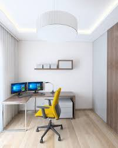

Bruknė-labai dosni ir veiksminga uoga, tad skubėkite rinkti

Bruknėse gausu organinių rūgščių, pektinų, raugų, vitamino C, mineralinių medžiagų - fosforo, kalio, kalcio, geležies, mangano, magnio. Gydyti vartojamos ne tik uogos, bet ir lapai. Liaudies medicinoje bruknių lapų užpilai ir nuovirai vartojami sergant inkstų, tulžies pūslės akmenlige, gastritais, kai sumažėjęs skrandžio sulčių rūgštingumas, kepenų ligomis, reumatu. Jų nuoviro duodama gerti žmonėms, kurie naktį nelaiko šlapimo. Nuovirui pagaminti reikia 20-30 g lapų ir trijų stiklinių karšto vandens. Skaitykite daugiau.
Penki patarimai, kaip dirbti namuose ir išsaugoti sveiką protą

Kad nereiktų sukti galvos apie feng šui taisykles, geriau bute tiesiog išsirinkti patogią vietą darbo stalui. Dirbti galima ir miegamajame, ir virtuvėje. Idealia vieta gali tapti įstiklintas balkonas - čia visada daug šviesos ir gryno oro. Stalą geriau pastatyti šonu į langą ar tiesiai priešais jį Kartais vietoj stalo galima naudoti palangę. ,,Jeigu stalą pastatysite priešais sieną, nuo jūsų krentantis šešėlis užstos visą darbinį paviršių, o monitorius - stipriai blyksės", - teigia dizainerė Aliona. Skaitykite daugiau.
Populiariausios naudotų automobilių markės Lietuvoje nesikeičia
Rugpjūčio mėnesį pirmą kartą Lietuvoje įregistruotų naudotų automobilių vidutinis amžius siekė 11,7 metų. Praeitą mėnesį Lietuvoje atliktos 23 tūkst. 707 naudotų lengvųjų automobilių savininkų keitimo operacijos, t.y., 8,6 proc. daugiau nei 2016 m. rugpjūtį (21 tūkst. 823). Rugpjūtį savininkus dažniausiai keitė ,,Volkswagen" (4235), ,,Audi" (3145) ir BMW (`177) markių automobiliai. Vidutinis savininką pakeitusio naudoto automobilio amžius rugpjūtį buvo 15,1 metų. Skaitykite daugiau.